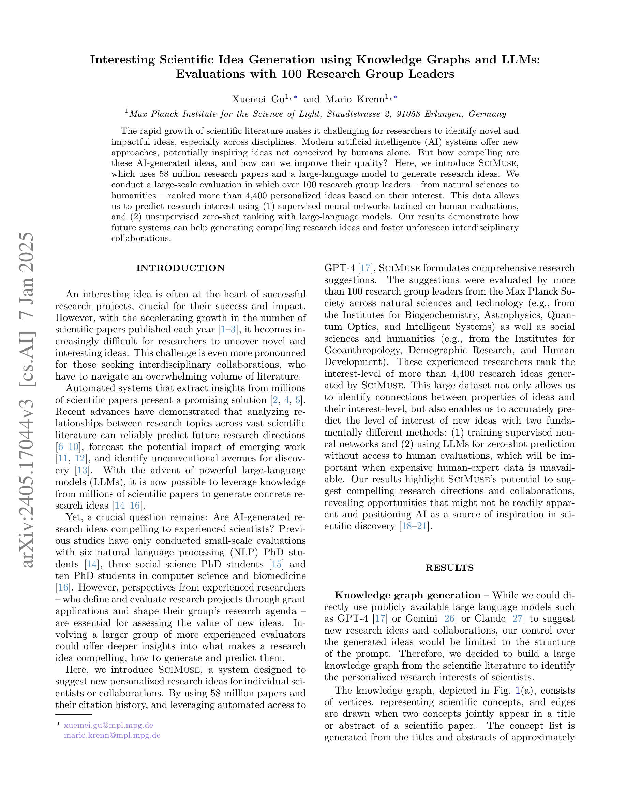
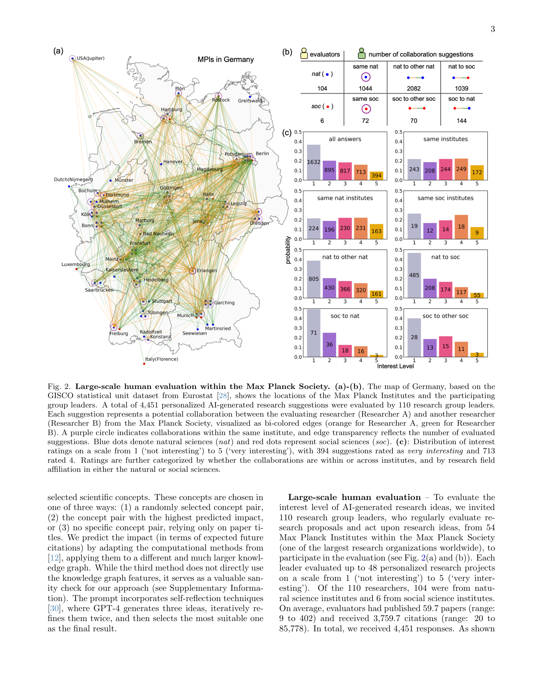
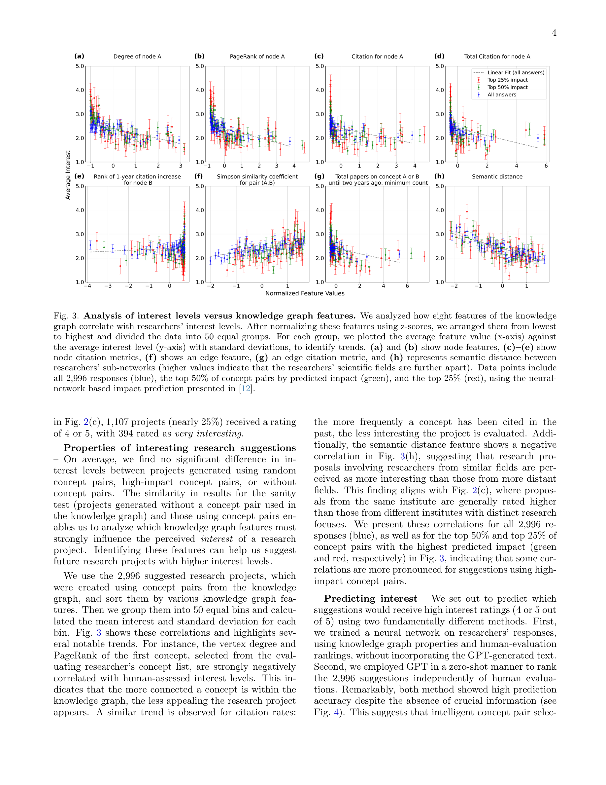
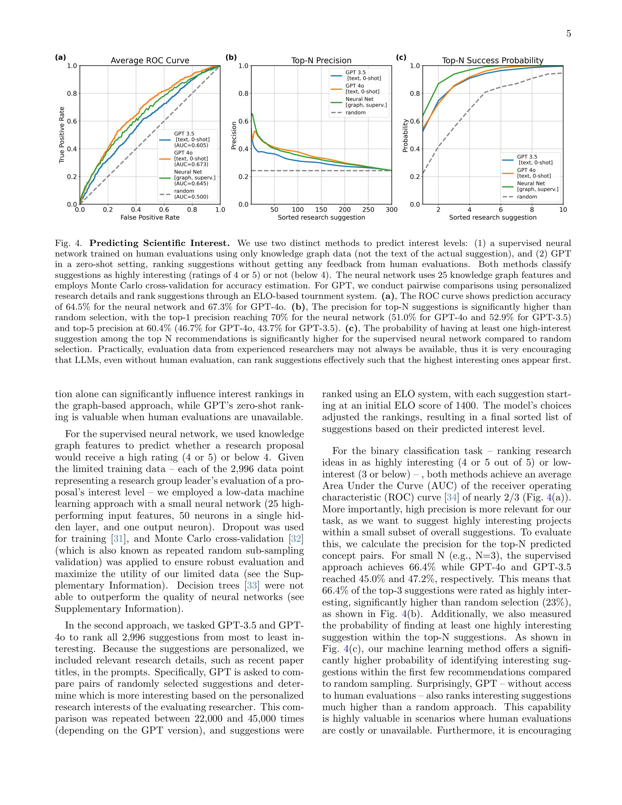

Figure 1
5,800만 편의 과학 논문에서 구축한 지식 그래프(knowledge graph)와 GPT-4를 결합하여 개인화된 연구 아이디어를 생성하는 시스템 SciMuse를 소개한다. 110명의 Max Planck Society 연구그룹 리더가 4,400개 이상의 AI 생성 연구 제안을 평가한 대규모 인간 평가를 수행하여, AI가 생성한 연구 아이디어의 흥미도를 실증적으로 검증하고, 지식 그래프 특성과 LLM을 이용한 흥미도 예측 방법론을 제시하였다.

Figure 2
과학 문헌의 폭발적 증가로 인해 연구자들이 새롭고 영향력 있는 아이디어를 발견하기 점점 어려워지고 있으며, 특히 학제간 협업의 경우 이 문제가 더욱 심각하다. AI 시스템이 수백만 편의 논문에서 통찰을 추출하여 인간 혼자서는 생각하지 못할 연구 아이디어를 제안할 수 있는 가능성이 열렸으나, 기존 연구는 소규모 평가(6명의 NLP 연구자)에 그쳐 AI 생성 아이디어의 실제 매력도를 충분히 검증하지 못했다.

Figure 3

Figure 4
AI 기반 연구 아이디어 생성의 실용성을 대규모 인간 평가로 검증한 선구적 연구이다. 110명의 연구그룹 리더라는 평가자 규모와 4,400+개 아이디어라는 데이터 규모는 이 분야에서 독보적이며, "AI가 생성한 아이디어가 경험 많은 과학자에게 실제로 매력적인가?"라는 핵심 질문에 정량적 답변을 제공한다. 약 25%의 높은 흥미도 비율은 고무적이다. 다만, 개념 쌍 선택 전략 간 차이가 없다는 결과는 지식 그래프의 실질적 기여에 대한 의문을 남기며, 흥미도와 실제 연구 성과 간의 괴리는 후속 연구로 검증이 필요하다. "덜 탐색된 영역 간의 연결이 더 흥미롭다"는 발견은 직관적이면서도 데이터로 뒷받침되어 학제간 연구 기획에 실질적 가이드라인을 제공한다. AI for Science의 "아이디어 생성" 단계에 관심 있는 연구자에게 필수 참고 문헌이다.